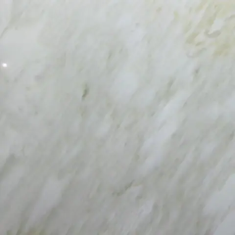
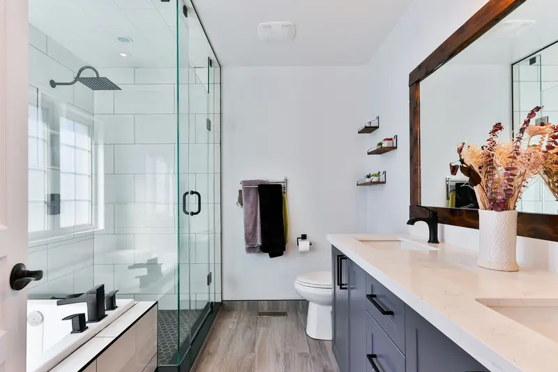
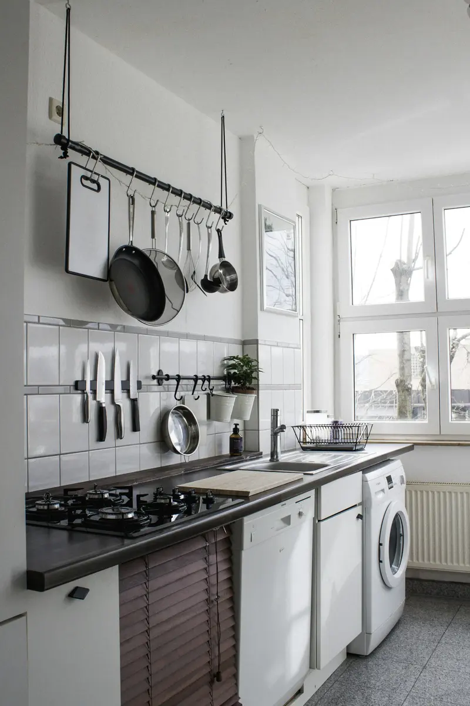

5,0
com 133 avaliações no Google
Ler as avaliações no Google
Pias, bancadas, balcões, cozinhas e banheiros em granito e mármore, feitos sob medida em Piracicaba.
Cada peça é cortada na medida do seu espaço, em granito ou mármore.
Pias de cozinha e de área de serviço em granito ou mármore, com o recorte da cuba feito na medida.
Simular uma piaBancadas sob medida para cozinha, lavanderia ou área gourmet, retas ou em L.
Simular uma bancada
A cozinha inteira na mesma pedra: bancada, pia, ilha e frontão combinando.
Simular uma cozinhaBancadas de banheiro e lavabo em granito ou mármore, no tamanho do seu espaço.
Simular um banheiro
Balcões para cozinha americana, comércio ou recepção, com o acabamento de borda que você escolher.
Simular um balcãoAlgumas das pedras mais pedidas. Toque em uma para ver como ela fica na sua peça.

Granito. Preto uniforme e profundo. Combina com quase tudo e disfarça bem o uso do dia a dia.

Granito. Verde-escuro com pontos dourados. Um clássico brasileiro, firme para o uso na cozinha.

Granito. Fundo escuro com grãos cor de cobre. Fica bonito ao lado de armários de madeira.

Granito. Branco com traços pretos marcantes. Para quem quer uma pedra clara com personalidade.

Mármore. Branco com veios cinza suaves. O mármore italiano mais conhecido, lindo em banheiros.

Mármore. Branco luminoso com veios dourados largos. Peça de destaque em lavabos e ilhas.

Mármore. Preto com veios brancos finos. Elegante em lavabos e bancadas de banheiro.
Outras pedras e a disponibilidade de cada uma são confirmadas no orçamento.
Cozinhas, banheiros e bancadas instalados pela Japão em Piracicaba e região.





Imagens ilustrativas neste protótipo. Na versão final entram as fotos das obras da Japão.
Ver mais obras no Instagram @japaogranitosemarmoresEscolha a peça, a pedra e o tamanho. A mensagem sai pronta para o WhatsApp, e o valor a Japão passa por lá.
É o que os clientes mais repetem nas avaliações do Google.
Você manda a mensagem e é atendido pelo próprio WhatsApp, sem enrolação.
A data combinada para a entrega é a data em que a peça chega.
Bordas, recortes e emendas tratados com cuidado, peça por peça.
Granitos e mármores escolhidos para durar na sua casa.
Prêmio de marmoraria recebido pelo 7º ano consecutivo em 2023.
Ver a publicação no Instagram5,0
com 133 avaliações no Google
Ler as avaliações no GoogleVocê chama no WhatsApp com a ideia, fotos ou medidas do espaço e recebe o orçamento.
Com o orçamento aprovado, as medidas são conferidas no local para a peça sair exata.
A chapa escolhida é cortada e recebe o acabamento de borda combinado.

A peça é instalada no dia combinado, pronta para usar.